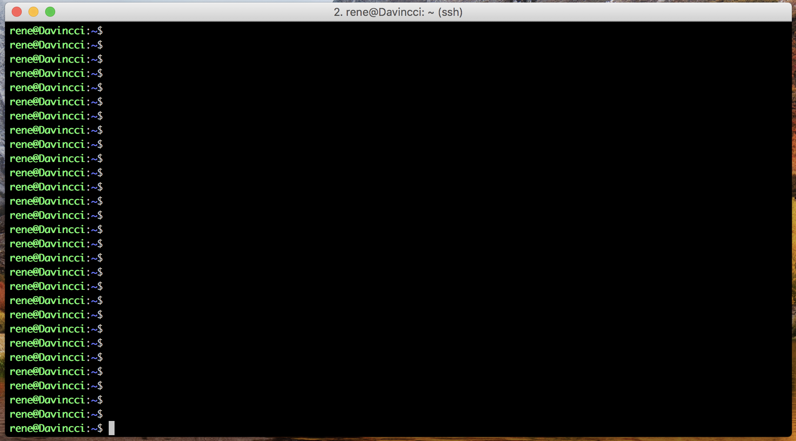
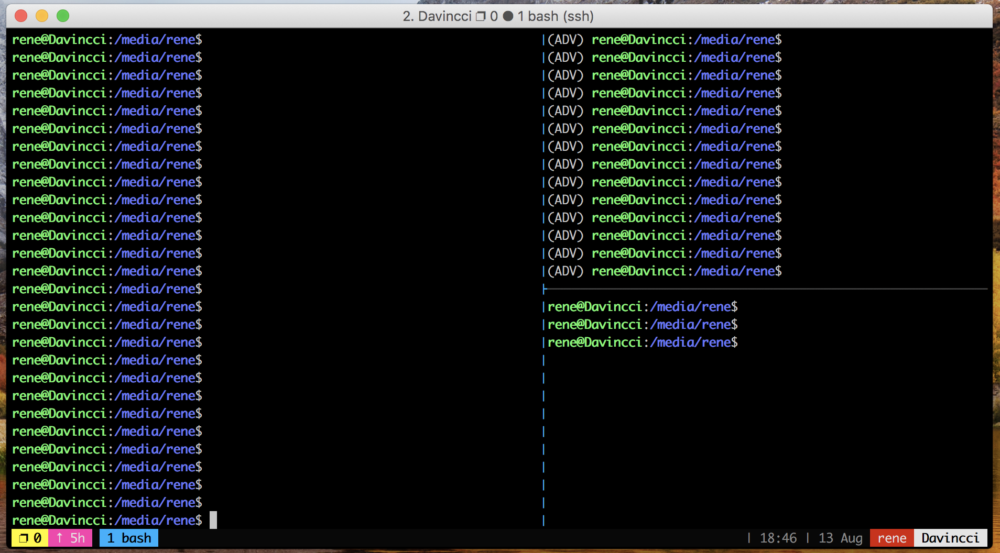
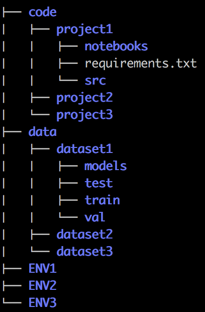

Deep Learning Remote Setup
Basic Set Up
To do any deep learning, you’ll either need to have set up a VM at a cloud provider (AWS, Azure or paperspace, google, etc.), unless you happen to have a gpu lying around. Most commonly these will be using a linux distribution like Ubuntu 16.04
If you aren’t familiar with linux, do a basic tutorial. After sshing to the machine, we will set it up:
There are a few things that must be installed everywhere:
- CUDA - GPU software
- Tmux - Preventing ssh connection from detaching with long running jobs
- SSH alias - connecting quickly
1. CUDA
If CUDA isn’t already installed, follow the instructions shown in this gist. This is probably the best way to set this stuff up. Make sure you’re installing the latest version, which you can check on the [Nvidia Website] (https://www.geforce.com/drivers)
Here is an example script to set up for the Fast Ai course. This is an easy way to get everything installed, but may include a bunch of unnecessary things.
2. Tmux
Tmux is used to prevent jobs from stopping when your connection to the remote machine is closed, as well as making your screen look cooler. This should be installed using:
sudo apt-get install tmux
|  |
|---|
| :–: |
| Without Tmux |
|  |
|---|
| With Tmux |
Tmux has a strange default configuration, and is difficult to use. You can make tmux much more user friendly, and can even use a mouse mode by using this configuration.
git clone https://github.com/gpakosz/.tmux.git
ln -s -f .tmux/.tmux.conf
cp .tmux/.tmux.conf.local .
Each time a you want to run code, start a tmux session using
tmux
When you log back on to the remote computer, reconnect to tmux using:
tmux a
More details are here
Note: An alternative is screen. Don’t use this, tmux is better.
3. SSH alias
There are many cases where a lot of typing can be saved by adding aliases the .bashrc file. For example, normally you will connect by using ssh:
ssh username@123.45.678.90
This is hard to remember, and will be annoying to copy paste every time. It would be easier to remember something like ssh-aws, which can be done by adding an alias.
If you’re working on a mac or linux you can make a shortcut instead by adding it to the .bashrc file. If it does not exist create it in your home directory.
Add this line:
alias ssh-aws='ssh -Y username@123.45.678.90'
Editing Code / Running Experiments
Editing code remotely isn’t as straightforward as doing it locally. There are a few commonly used options:
1. VIM
- Edit code directly on the remote computer.
- This is the most commonly recommended approach, but it has a steep learning curve and will take some effort to become proficient.
2. SSHFS for mac
- This allows you to mount the remote directly locally, so you can edit the code like any other code on your machine
- Can use any text editor or IDE
- Install following the instructions
- Add an alias to the local .bashrc as:
alias sshfs-aws='umount /Users/.../local_sshfs_folder;
sshfs username@123.45.678.90:/username/code /Users/.../local_sshfs_folder'
3. IDEs
- Some IDEs directly integrate this functionality
- The paid version of Pycharm has a remote sync option.
4. SCP
- It is possible to edit files locally and then scp them to the server, but this is a bad idea. Don’t do this.
Organiation
|  |
|---|
| Example Directory Structure |
- To make it easier to mount the directory remotely, I keep the code for all projects together, and have the datasets in a seperate location.
- Each project has its own git repo.
- Each dataset has its own models stored together, with an explicit test/train/val split
- There is no correct way to do this, and the organization really depends on the complexity of the project. Look at cookiecutter datascience for a good overview of this.
Starting a project
Once you have connected to the remote computer and made a tmux session:
1. Create a virtualenv for each project
python3 -m venv ENV
This can be activated using
source ENV/bin/activate
To save the package requirements, use
pip freeze > requirements.txt
The purpose of a virtualenv is to isolate each of your projects, allowing you to seperately install dependencies for each project without worrying about conflicting requirements. The requiremnts are easily saved using pip freeze, so it is easy for anyone work on the project using a different computer, because all dependencies can be installed with pip install -r requirements.txt.
2. Create a git repo for each project
Initialize the folder your project is stored in as a git repo using
git init
If your aren’t familair with git, try this tutorial. Make sure to frequently commit changes and backup to a service like Github, Bitbucket or Gitlab. This will be a lifesaver when code is accidnetally deleted, and will make sharing code and switching computers easy.
It is useful to include a readme explaing the basics of the code and how to reproduce key results, as well as the requirements.txt file. Working on a project on a new computer will be simple, because all you need to do is clone the repo and install the requirments to get it working.
3. Jupyter Notebooks
Jupyter notebooks are great for quickly testing ideas and presenting results. They are popular for data science in general, but there can be some issues when running them remotely. There are a few ways to make this work.
To start a notebook on the remote machine, specify that no browser is being used, as well as the port. Export this in the .bashrc on the remote machine:
alias notebook='jupyter notebook --no-browser --port=8889'
Once a notebook is started, you must connect the local to it. This is greek to me, but seems to work. Add this to the local .bashrc:
alias aws-nb='lsof -ti:8888 | xargs kill -9;
ssh -N -f -L localhost:8888:localhost:8889 username@123.45.678.90'
Note: This may not be the most secure way to do this
Notebooks and virtual environments
Before starting a notebook, activate the virtual envrionment and run this:
pip install ipykernel
ipython kernel install --user --name=project1
This ensures the correct kernel will be available from inside the notebook. You should be able to select the kernel “project1” from inside the notebook.
The downside of notebooks is they quickly become a mess when there is too much code. It is best to break the code inside the notebook into functions, and keep these in seperate python files outside the notebook. Multiple notebooks can then import the same functions.
Keep notebooks primarily for exploring data and visualizing results, not for running complex jobs or storing code.
Notebook Config
To ensure the notebook plots correctly and reloads updated functions, I add this into a cell at the top of every notebook:
%matplotlib inline
%load_ext autoreload
%autoreload 2
For more complex projects, notebooks will quickly become a mess because there is too much code floating around in each notebook. For functions used multiple times, save them in a seperate .py file, and load them into the notebook.
Notebooks won’t record output on long running processes after your computer has disconnected. More complex jobs should be run using the regualar command line, possibly using Sacred to ensure reproducability.
Conclusion
Developing on a remote machine with bigger jobs can be difficult, especially if you’ve got limited coding background. Reproducability and iteration speed become much more imnportant when dealing with slow running and complex experiments, so its worth it to take the time to figure out a good method to make this happen. What is here was based on my own experiences suffering through a bad workflow and lack of reproducability, and are mostly based off of trial and error.